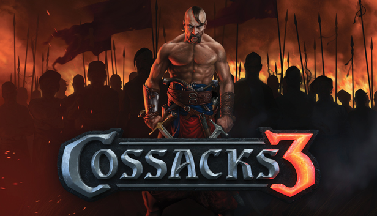

Return of the legendary Cossacks! The sequel of the award winning strategy series. Leaning on the history of the 17th and 18th century, the real time strategy game awakens colossal mass battles with up to 32,000 soldiers simultaneously on the battlefield. This remake of the classic game, that originally launched in 2000, contains all of the elements that distinguish the successful Cossacks games and combines them with contemporary 3D-graphics. Cossacks 3 provides the player with infinite tactical options, including not only the construction of buildings, the production of raw materials , but also the broad selection of various units and the influence of the landscape. 20 nations, 120 different unit types, 100 research opportunities, and over 220 different historical buildings are available to the player. Besides the battles ashore, players can build an armada and attack their enemies at sea. Cossacks 3 offers five historic single player-campaigns and up to eight players can fight each other in multiplayer-mode on one map. The player can forge alliances with or against others as well as challenge the computer. Randomly generated maps provide endless variations and can be adapted to the gamer’s needs.
Click the Download button below and you should be redirected to UploadHaven. Wait 5 seconds and click on the blue ‘download now’ button. Now let the download begin and wait for it to finish. Once Cossacks 3 is done downloading, right click the .zip file and click on “Extract to Cossacks.3.Experience.zip” (To do this you must have 7-Zip, which you can get here). Double click inside the Cossacks 3 folder and run the exe application. Have fun and play! Make sure to run the game as administrator and if you get any missing dll errors, look for a Redist or _CommonRedist folder and install all the programs in the folder.

Download Cossacks 3 Online For Free
OS: Windows XP/7/8/10
Processor: Intel Core 2 Duo E8400 3.0GHz / Core i3 1.6GHz / AMD Athlon II X2 280
Memory: 3 GB RAM
Graphics: nVidia GeForce 9600 GT / Radeon HD 4830 / Intel HD5000
DirectX: Version 9.0c
Storage: 6 GB available space
Additional Notes: Screen Resolution – 1280×768